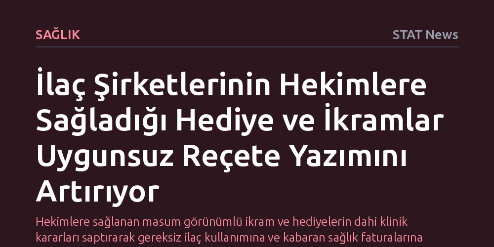

SAGLIK · STAT News · 2026-10-10
Kapsamlı bir Cochrane analizi, ilaç şirketlerinin hekimlere sağladığı hediye ve ödemelerin uygunsuz reçete yazımını ve sağlık harcamalarını artırdığını ortaya koydu. Araştırma, çıkar çatışmasını kısıtlayan kurumsal politikaların ise hekimlerin reçeteleme pratiklerini belirgin biçimde düzelttiğini gösteriyor.
Hekimlere sağlanan masum görünümlü ikram ve hediyelerin dahi klinik kararları saptırarak gereksiz ilaç kullanımına ve kabaran sağlık faturalarına yol açtığını somut kanıtlarla belgeliyor.

İlaç üreticilerinin hekimlere sunduğu bedava yemekler, hediyeler ve çeşitli adlar altındaki ödemeler, tıp dünyasında uzun süredir tartışılan etik sınırları yeniden gündeme taşıdı. Bağımsız araştırma ağı Cochrane tarafından yürütülen ve tıp pratikleri üzerindeki endüstri etkisini inceleyen onlarca çalışmayı kapsayan kapsamlı analiz, bu ticari temasların hekimlerin klinik kararlarını doğrudan etkilediğini ortaya koydu. Elde edilen bulgular, firmalardan hediye ya da ödeme kabul eden hekimlerin tıbbi açıdan gereksiz veya uygunsuz reçete yazma olasılığının belirgin biçimde arttığını gösteriyor.
İncelenen araştırmalar, hediye ve ödemelerin yalnızca yazılan reçetelerin niteliğini bozmakla kalmadığını, aynı zamanda hekimlerin kaleme aldığı toplam reçete sayısını da yukarı çektiğini belgeliyor. Klinik kılavuzlara ve hastanın gerçek gereksinimlerine uymayan ilaçların sisteme girmesi, sağlık bütçeleri üzerinde zincirleme bir baskı kuruyor. Küçük bir ikram gibi görünen temaslar, nihayetinde hem hastaların gereksiz riskler almasına hem de genel sağlık harcamalarının kontrolsüzce tırmanmasına zemin hazırlıyor.
İlaç endüstrisinin hekimlerle kurduğu temas yalnızca doğrudan hediyelerle sınırlı kalmıyor; hekimlere yönelik hazırlanan reklamlar ve sponsorlu eğitim faaliyetleri de benzer bir etki mekanizması barındırıyor. Cochrane analizi, şirket kaynaklı eğitim programlarının ve ticari tanıtımların da uygunsuz reçeteleme oranlarını yükselttiğini ve yazılan toplam reçete hacmini muhtemelen artırdığını saptadı. Hekimlere bilimsel güncelleme kılıfıyla sunulan bu içerikler, çoğu zaman firmaların kâr marjı yüksek ürünlerini öne çıkaran bir pazarlama aygıtına dönüşüyor.
Bu tür örtülü tanıtım stratejileri doğrudan reçete maliyetlerinin katlanmasına yol açıyor. Bağımsız kaynaklar yerine şirket güdümlü materyallerle bilgilendirilen hekimlerin daha pahalı tedavi seçeneklerine yönelme eğilimi gösterdiği görülüyor. Dolayısıyla hekimlerin iyi niyetle mesleki gelişim sandığı etkinlikler, arka planda ilaç faturalarını kabartan ve sağlık sisteminin sürdürülebilirliğini tehdit eden yapısal bir sorun üretiyor.
Araştırmanın ortaya koyduğu en umut verici sonuç, çıkar çatışmasını engelleyen kurumsal önlemlerin sahada somut bir fark yaratabilmesi oldu. İlaç şirketleri ile hekimler arasındaki temasları sınırlayan, hediye alımını yasaklayan ya da şeffaflık zorunluluğu getiren sıkı çıkar çatışması politikalarının, hekimlerin reçete yazma pratiklerini muhtemelen düzelttiği tespit edildi. Bu bulgu, sektör baskısının yalnızca hekimlerin bireysel etik anlayışına bırakılamayacağını, bağlayıcı kurumsal düzenlemelerin tıbbi tarafsızlığı korumada kritik rol oynadığını teyit ediyor.
Bununla birlikte, analizin her alanda kesin bir hükme varamadığı noktalar da mevcut. Örneğin kliniklere dağıtılan ücretsiz ilaç numunelerinin ve diğer kurumsal promosyonların, hastane formülerlerine—yani sağlık kuruluşlarında onaylanan ve rutin olarak stoklanan ilaç listelerine—hangi ürünlerin gireceğini belirlemede ne kadar etkili olduğu konusunda henüz yeterli kanıt bulunmuyor. Kurumsal alım süreçlerindeki etkiler belirsizliğini korusa da, doğrudan hekim odaklı promosyonların sınırlandırılmasının halk sağlığı ve kamu maliyesi adına vazgeçilmez olduğu anlaşılıyor.